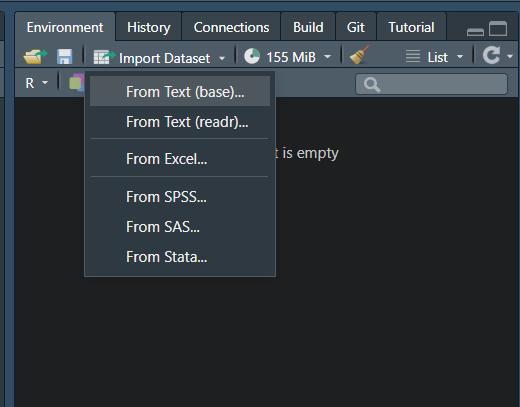

Chapter 5 進階篇_資料讀取、匯出、合併與初步瀏覽
5.1 設定工作路徑
首先可以先設定放檔案路徑，比較需要注意的是在路徑上平常多是使用\，
但在R中需要使用/
這樣之後讀取或匯出資料就只需要寫檔案名稱，不用加上前面路徑，會直接存在設定路徑的資料夾中，若檔案需要放在另外位置，也只須在檔名前面加上需要存取的位置
可以對需要存放的資料夾按
右鍵->內容->位置或是右鍵->複製路徑
查看資料夾的路徑
若是使用R Project打開，除非需要更換路徑，不然預設就是R Project的資料夾
#設定工作路徑
setwd("D:/Dropbox/R_for_NGO") 5.2 讀取資料
開放資料(英語：Open data)指的是一種經過挑選與許可的資料。這種資料不受著作權、專利權，以及其他管理機制所限制，可以開放給社會公眾，任何人都可以自由出版使用，不論是要拿來出版或是做其他的運用都不加以限制。
Open data 運動希望達成的目標與開放原始碼、內容開放、開放獲取等其他「開放」運動類似。Open data 背後的核心思想由來已久(例如在 Mertonian tradition of science)，但 Open data 這名詞直到近代才出現，拜網際網路崛起而為人所知，尤其是 Data.gov 等 Open data 政府組織的設立。 (維基百科)
常見的Open Data儲存方式包括表格式檔案（包含 CSV 資料、Excel 試算表）、非表格式檔案（包含 TXT 資料、JSON 資料、XML資料），
但大多數的公開資料都可以直接下載CSV檔案，因此在此先介紹這個較簡單的方式，
另外其他透過網路爬蟲、API或JSON與XML格式的資料，暫不多做介紹，有興趣者可以到以下連結查看參考1、參考2、參考3
5.2.1 Import Dataset功能 (RStudio)
若是檔案為可直接下載(通常來說，多數公開資料都有提供直接下載的.CVS檔案格式)，包括文字檔、其他軟體的檔案格式，
在RStudio當中有提供直接點選讀取資料的功能，包括純文字.txt、.cvs、或Excel試算表.xslx、spss、SAS、Stata的檔案格式
下圖以讀取.cvs檔案為範例，
1. 點選Import Dataset -> From Text(readr)...
2. 出現視窗後點選左上角Browse，點選要輸入的檔案
3. 之後空白處會載入部分資料提供預覽，可以根據需求更改參數(左下角)
4. 右下角也有提供程式碼，且就是根據你點選的方式呈現，可以點選完後複製程式碼(右下有個類似紙的圖案)，這樣就可以留下讀檔案的紀錄


5.3 匯出檔案
在R處理完檔案後，通常會將檔案匯出成其他另外檔案提供其他人使用，較常匯出使用的檔案格式tab分隔的文字檔.txt或是逗號分隔的文字檔.csv，有一些格式上的呈現可以另外再進行參數設定，這邊只會介紹簡單的匯出形式，若要調整可參考該函數的help文件
5.3.1 R物件.rds
若是處理到一半，之後還要繼續用R處理，可以先匯出成R物件檔案.rds，較方便自己下次處理，後續最後處理完成再轉換成其他常見檔案
#取得R內建資料
data(iris)
saveRDS(iris,"iris.rds") ## 前面是data名稱、後面是要存的檔案名稱5.3.2 文字檔.txt
#查詢write.table的help文件
?write.table
#取得R內建資料
data(iris)
#匯出成.txt檔案
write.table(iris, file = "iris.txt", sep = ",", row.names = F, col.names = T)write.table的help文件，文件後面也有針對每個參數的描述 
5.4 簡單資料合併
在資料當中有時需要新增整列或整行的資料，
可以使用rbind()和cbind()來完成(vector或是data.frame都適用)
若今天想在iris資料中加入新的一列(原先有150筆資料新增一筆)
# vector
rbind(c(1, 2, 3), #第一列
c("apple", "banana", "cat") #第二列
)
# 取得R內建資料
data(iris)
names(iris)
# 新增成另一個資料
iris_nrow <- rbind(iris, #資料框
c(1, 2, 3, 4, "setosa") ## 新增一列
)
## or
# 直接更換原先的資料
iris <- rbind(iris, #資料框
c(1, 2, 3, 4, "setosa") ## 新增一列
) 

若今天想在iris資料中加入新的一行(原先有四行)
# vector
cbind(c(1, 2, 3), #第一行
c("apple", "banana", "cat") #第二行
)
#取得R內建資料
data(iris)
names(iris)
# 新增成另一個資料
iris_newcol <- cbind(iris, ## 資料框
rep("newcol", nrow(iris)) ## 自行新增一行、或是有對應的資料可以直接新增
)